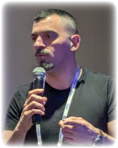

An update on GCC BPF support
José Marchesi and David Faust kicked off the BPF track at the 2025 Linux Storage, Filesystem, Memory-Management, and BPF Summit with an extra-long session on what they have been doing to support compiling to BPF in GCC. Overall, the project is slowly working toward full support for BPF, with most of the self-tests now passing using Faust's in-progress patches. However, the progress toward that goal has turned up a number of problems with how Clang supports BPF that needed to be discussed at length to find a path forward for both projects.
Marchesi began by saying that there was not actually much to cover this
year. Pessimistically, he said, progress is slowing down. Optimistically,
support for BPF is stabilizing and there's "less to do because the work has
been done already
". Based on the rest of his presentation, it seemed to me
that the optimistic outlook was more appropriate.

A version of GCC supporting BPF has now been added to Fedora, from where it will eventually make its way into CentOS, RHEL, and other distributions that pull from Fedora's packaging ecosystem in one way or another. Most major distributions, including Debian, Ubuntu, Gentoo, Arch, and all of their derivatives, now support compiling to BPF with GCC. Gentoo is actually using GCC to build BPF components of some packages, Marchesi said.
Getting a BPF-capable GCC into distributions is important not only because of easy availability, but also because that means the project has started receiving bug reports. Marchesi said that they really appreciate bug reports, and that receiving them would help solidify GCC's BPF support. The inclusion in various distributions also seems to suggest that last year's plan to introduce special maintenance branches for BPF is unnecessary — which is good, since it's less work for everyone.
The BPF support is also proving useful for other parts of GCC, particularly support for NVPTX, the architecture used by some Nvidia GPUs. That is also a limited architecture that demands special attention, Marchesi said.
Tagging misadventures
GCC is also now passing more BPF self-tests. In particular, there's some work that was submitted upstream for review just before the summit that fixes how GCC generates BPF Type Format (BTF) tags for kernel pointers. BTF represents compound types as a chain of different tags; for example, a kernel pointer to an integer (which is distinguished from a normal pointer in BPF so that the verifier can treat it specially) is represented as something like:
// In C:
int __kptr * name;
// In BTF:
pointer type tag -> kernel pointer annotation -> integer
The fact that the annotation that marks a pointer type as a kernel pointer comes after the pointer type itself is a bit unusual. Other annotations, such as const, are represented by tags that appear before the pointer type. Previously, GCC had emitted the kernel pointer annotation in the same location as all of the other annotations; changing it to match Clang's behavior greatly increases the number of BPF self-tests that pass with GCC.
Marchesi wasn't happy with that, though, since he thinks that the kernel pointer annotation should go in the same place as all of the other annotations. He suggested Clang and libbpf should be altered to do things that way. Yonghong Song said that possibility had been discussed during the initial design of BTF, and he wondered if anything had changed since then to justify revisiting the decision. Faust suggested that it might be possible to permit both orderings, although he wasn't sure how pahole would know the difference. Pahole maintainer Arnaldo Carvalho de Melo said that the program could just check the producer of the BTF, so that wouldn't pose a problem — although the goal is still to eventually remove pahole from the BPF compilation pipeline, so GCC will need to generate tags in a way that matches the kernel's expectations.
Faust asked how Clang represents type tags on non-pointer types; Song replied that it doesn't, and would need to change if that were desired. Faust said that the ability to put type tags on non-pointers was useful — an assertion that would come up again later when discussing the representation of inlined BPF functions. Alexei Starovoitov asked Faust and Marchesi to submit a kernel patch adding support for their preferred tag ordering in the verifier, which Faust agreed to do.
Any changes to how GCC handles BTF tags is almost certainly going to need to wait for the release of GCC 15 to be finalized in late April, however, since many GCC maintainers are busy with that. Faust has another change related to tagging that is also waiting for review: an extension to DWARF debug information that was discussed at the 2024 Linux Plumbers Conference that would allow merging lists of debug information with matching tails. Since GCC generates BTF information from its internal DWARF representation, this should also result in more compact BTF sections for BPF programs.
Marchesi explained that the size of the BTF information hadn't really been a
problem for the kernel, "but we need to make [the core GCC developers] happy
". Song said
that Clang didn't need to save space by sharing debugging information
quite yet, because it has fewer type tags. Marchesi
said that he expects Clang will need it eventually, and Faust thought there were
other uses for the feature as well.
Google Summer of Code
GCC participates in the Google Summer of Code every year; this time around, Marchesi said that he had proposed asking someone to write infrastructure for running GCC's BPF tests on a specific kernel. Currently, Ihor Solodrai maintains continuous-integration testing for the bpf-next tree (which he spoke about during a later session), that tests every submitted patch to ensure that there are no regressions in what the verifier accepts. Marchesi wants the same thing for GCC changes, so that GCC contributors can get quick feedback on whether new optimizations break the verifier.
He suggested that a student could write a test tool to launch a suitable kernel in a virtual machine and load a BPF program into it, and integrate this into GCC's existing test infrastructure. Some of the attendees were a little skeptical, however. Starovoitov pointed out that launching a virtual machine for each test would be pretty slow, and wondered whether the BPF program could be run on the host instead. Marchesi said that none of the existing tests used virtual machines, but that GCC does have some tests that rely on specific pieces of external hardware, which is not that different from the test harness's perspective.
One attendee asked which kernel version they planned to test against.
"Something stable
", Faust replied. Starovoitov said that working on these
tests seemed like a
good direction for GCC, but that it might be a bit much for a Google Summer of
Code project. Marchesi said that the deadline for applications is April 8, so
they would soon know whether anyone thought they were up to the challenge.
Non-lexical annotations
A somewhat more substantial problem that Faust and Marchesi encountered when trying to match Clang's behavior was how to handle preserve_access_index. This attribute is one of the core pieces that makes "Compile Once - Run Everywhere" (CO-RE) relocations possible. It instructs the BPF verifier to use the information about field names in the BTF debugging information to rewrite accesses to the fields in a structure at run time to cope with any changes to the structure's layout. This lets BPF programs compiled against headers from one version of the kernel run on any sufficiently-similar kernel, even if the exact ordering of fields in a structure has changed.
The basic attribute is working correctly in GCC today. The problem comes from how to handle the case where the attribute is specified as part of a nested structure. Consider this example:
struct other {
char c;
int i;
}
struct outer_attr {
struct other other;
struct {
long l;
} nested;
} __attribute__((preserve_access_index));
Given that the attribute is only applied to the outer structure, how should the compiler handle accesses to nested.l or other.i? The way that Clang handles this case today — which is almost certainly not standards compliant — is that the attribute is propagated to nested, but not to other. This would make some sense if the program were written in C++, which defines nested structures as different from non-nested structures, but the C standard does not. In fact, Marchesi pointed out, the C standard doesn't have a concept of nested structures at all; the ability to write one structure definition inside another is a pure syntactical convenience.
On the other hand, several attendees thought that propagating the attribute made
intuitive sense.
There doesn't really seem to be any benefit in refusing to emit CO-RE
relocation information for nested. Implementing Clang's behavior would
be difficult for GCC, though, Marchesi said. GCC's parser de-nests structure
definitions at parse time, so the compiler doesn't even have access to the
information about whether they were nested when doing code generation. "If we
wanted to do what Clang does — and we don't want to — we would need to hook the
parser
." He would
prefer it if Clang were to recognize this as a bug and require the programmer to
manually write __attribute__((preserve_access_index)) on any nested
structures.
Song said that this Clang behavior was both deliberate and BPF specific; they didn't want to force users to add attributes to every nested structure. Another attendee suggested leaving nested structures alone, but making the behavior of structures included by reference (like other, above) the same, for consistency. If an outer structure is CO-RE relocatable, they said, logically the inner structure should be CO-RE relocatable regardless of how it got to be in that structure.
Faust agreed in principle, but pointed out that these attributes are applied to types; if a structure is used un-nested in one context and nested inside a structure with the attribute in another, that would suggest it should only be CO-RE relocated in the latter case. But there's no way to specify that in BTF, because both uses are the same type. Ultimately, the group failed to reach a consensus on what the desired semantics for the attribute were — which means that users wishing to write BPF programs with GCC may need to apply the attribute to their nested structures by hand, at least for the time being.
Actual changes
It had previously been unclear whether programs that include headers from
the standard library should use the versions installed on the build host when
compiled to BPF,
Marchesi said. Well, that question has been answered: the C standard (since C99)
actually requires the build environment to provide those headers. So GCC has
been changed to match Clang's behavior, and provide (lightly modified) versions
of the standard library headers available on the host to BPF programs. That may
be a problem if a BPF program ends up relying on some part of the GNU C library,
for example, since BPF is really a "bare-metal target
" from the
compiler's point of view. Users who want the old behavior can pass the
-fno-hosted command line argument.
Faust has also been working on expanded support for the BPF
may_goto
instruction. Currently, the instruction is only usable in inline assembly;
Clang's C front-end will never generate it, Song said. Faust called the work needed to let
it be generated by C code "pretty trivial
", however, so GCC's code
generator may make use of it soon.
Marchesi questioned whether the bpf_fastcall instruction was still
optional — that is, whether leaving it unimplemented would cause any problems
other than sub-optimal performance. Starovoitov said "in theory, yes,
"
but it is "getting less optional over time
". That prompted Faust to ask
whether there was some order that the assembled BPF developers would prefer
may_goto, fixes for BPF atomic memory orderings, bpf_fastcall,
preserve_static_offset, and the fixes to BPF tags to be implemented in.
Starovoitov said that type tags were by far the most important, followed by supporting may_goto in inline assembly, followed by bpf_fastcall, and then finally preserve_static_offset. Nobody seemed to disagree with that assessment.
Another potential improvement that Marchesi was looking forward to was the inclusion of additional "must" annotations in the compiler, such as [[musttail]]. That annotation, which was added recently and is seeing increasing use, signals an error if the compiler isn't able to ensure that the last call in a function is a tail-call. Another possible annotation of this type would be a "must inline" annotation, which would be stronger than always_inline since the latter can silently fail to inline a function if it's too large.
John Fastabend asked whether this would permit writing recursion in BPF
programs. Starovoitov's laconic answer was "maybe
". Fastabend elaborated
that the last thing preventing
Tetragon from using plain function calls in its
BPF programs is the lack of support for recursion; having [[musttail]] support
would theoretically let the verifier's existing loop-handling logic handle
recursive calls. Starovoitov warned that it wasn't that simple, and that there
would likely be additional changes to the verifier needed.
Runtime BTF and debugging BTF
Near the end of the assigned time, Marchesi brought up the fact that BTF serves something of a dual role. On the one hand, BTF information is supposed to be usable as a debugging format, so ideally it would reflect the source program that the user wrote. On the other hand, BTF is used by the verifier to understand the program, and for CO-RE relocations, for which it should reflect whatever is in the binary form of the program.
As an example, GCC has several optimization passes that can change function signatures. The main one is "interprocedural scalar replacement of aggregates" (ISRA), which among other things removes unused parameters and converts some parameters to be passed by value. If the compiler generates BTF before doing optimization, the BTF will reflect the original signatures of functions, which won't necessarily contain the information the verifier wants. If the compiler generates BTF after doing optimization, users will not be able to use it to understand their programs, because it will no longer correspond to what they wrote.
Right now, GCC and Clang both emit BTF before doing optimizations. This can lead to problems where the verifier will not be able to find the BPF that corresponds to a function that was optimized with ISRA. Everyone present agreed that was a problem, but not everyone was as happy with the suggestion one of the other pahole maintainers put forward: generate both. While it has the benefit of being a relatively simple fix, it's not particularly elegant. Discussion about the benefits and drawbacks continued for some time, before eventually coming to a close to comply with the schedule.
| Index entries for this article | |
|---|---|
| Kernel | BPF/Compiler support |
| Conference | Storage, Filesystem, Memory-Management and BPF Summit/2025 |
Posted Apr 4, 2025 20:22 UTC (Fri)
by Karellen (subscriber, #67644)
[Link] (1 responses)
The fact that the annotation that marks a pointer type as a kernel pointer comes after the pointer type itself is a bit unusual. Other annotations, such as const, are represented by tags that appear before the pointer type. I'm finding this a bit confusing. Are you talking about "the annotation" in C, or in BTF? Or, am I not understanding how C types get translated into BTF types? In C, isn't it the case that: The annotation (e.g. const) can come before or after the pointed-to-type, and in both cases refers to the pointed-to-type. Mustn't the annotation come after the pointer declaration (the *) to apply to the pointer itself? So, according to C rules, don't int __kptr * name; and __kptr int * name; both say that the int is a kptr, whereas shouldn't int * __kptr name; be used to imply that the pointer is a kptr? (Or are you saying that int * __kptr name; should be how it's represented in C, but isn't?)
Posted Apr 7, 2025 12:03 UTC (Mon)
by daroc (editor, #160859)
[Link]
So Marchesi's point is that this is inconsistent.
Annotation placement
// In C:
int __kptr * name;
// In BTF:
pointer type tag -> kernel pointer annotation -> integerconst int * name; // Pointer to const int
int const * name; // Pointer to const int
int * const name; // Const pointer to intAnnotation placement